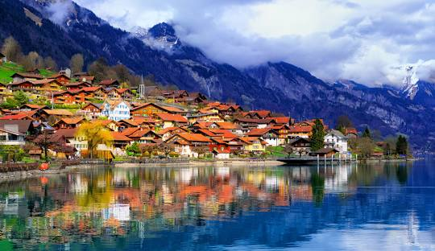

Curiosidades Inusitadas de Diferentes Países ao Redor do Mundo
Uma volta ao mundo em fatos curiosos e culturais que você talvez não conheça.
Japão — Trem mais pontual do mundo

Japão mantém título do trem mais pontual do mundo Japão — Trem mais pontual do mundo é exemplo de disciplina e tecnologia No mundo moderno, onde atrasos em transportes coletivos são comuns, o Japão se destaca com um feito impressionante: operar o sistema ferroviário mais pontual do planeta. O protagonista desse cenário é o Shinkansen, popularmente conhecido como trem-bala, que liga cidades japonesas a velocidades superiores a 300 km/h, com uma precisão de horários que beira a perfeição. Segundo relatórios anuais da JR Central, empresa responsável por parte da operação, o atraso médio por trem é de menos de 20 segundos por ano. Isso inclui fatores imprevisíveis como condições climáticas adversas ou pequenos incidentes técnicos. Para os passageiros, a experiência é de total confiança: se o trem está marcado para partir às 10h00, ele parte exatamente às 10h00. Como o Japão alcançou tamanha pontualidade? A explicação está na soma de tecnologia avançada, cultura de disciplina e respeito ao passageiro. Infraestrutura exclusiva – As linhas do Shinkansen não se misturam com trens comuns. Isso reduz drasticamente as chances de interferência ou congestionamento. Monitoramento em tempo real – Sensores e sistemas digitais acompanham cada segundo da viagem, prevendo falhas antes que elas aconteçam. Manutenção rigorosa – A cada poucas horas, equipes especializadas inspecionam trilhos, estações e vagões, garantindo segurança e eficiência. Treinamento de funcionários – Condutores e equipes de apoio passam por anos de preparação. Até o tempo de abertura e fechamento das portas é cronometrado. Planejamento cultural – No Japão, o respeito ao tempo do próximo é um valor social. O transporte reflete esse compromisso coletivo. Um impacto que vai além da viagem A pontualidade ferroviária japonesa não beneficia apenas os passageiros. Ela influencia diretamente a economia e a imagem do país. Produtividade: Trabalhadores podem planejar suas rotinas com precisão, reduzindo atrasos em compromissos profissionais. Turismo: Visitantes estrangeiros ficam impressionados com a confiabilidade do sistema, o que valoriza a experiência no país. Credibilidade global: O Shinkansen tornou-se um cartão de visitas do Japão, símbolo de eficiência e inovação. Curiosidades que chamam a atenção Em situações raríssimas de atrasos maiores, as companhias emitem cartas de desculpas formais para os passageiros apresentarem no trabalho ou na escola. O primeiro Shinkansen foi inaugurado em 1964, conectando Tóquio a Osaka, e já na época foi considerado uma revolução. Os trens mais modernos chegam a 320 km/h, mas mesmo com tamanha velocidade, a taxa de acidentes é praticamente zero. A limpeza dos vagões é tão eficiente que equipes especializadas conseguem deixar um trem inteiro pronto para a próxima viagem em apenas sete minutos. O futuro da pontualidade O Japão não pretende parar. Projetos já estão em andamento para expandir a rede com novas tecnologias, como o Maglev, trem de levitação magnética capaz de atingir 600 km/h em testes. A promessa é manter a mesma pontualidade impecável que já se tornou marca registrada. 👉 Conclusão: O trem mais pontual do mundo não é apenas fruto de tecnologia, mas de uma filosofia cultural que valoriza a disciplina, o respeito e a confiança coletiva. Para o Japão, cada segundo importa — e esse detalhe faz toda a diferença na vida de milhões de pessoas todos os dias.
Austrália — Mais cangurus que pessoas
Austrália registra mais cangurus do que habitantes Austrália — Mais cangurus que pessoas A Austrália é mundialmente conhecida por suas paisagens exuberantes, praias paradisíacas e uma fauna única. Mas existe um dado curioso que surpreende muitos: no país, há mais cangurus do que habitantes. Segundo estimativas do governo australiano, a população de cangurus ultrapassa 40 milhões, enquanto o número de pessoas gira em torno de 26 milhões. Isso significa que, em média, há quase 1,5 canguru para cada australiano. Por que existem tantos cangurus? Os cangurus se adaptaram perfeitamente às condições naturais da Austrália. Eles se reproduzem rapidamente, sobrevivem em áreas secas e conseguem se alimentar de diferentes tipos de vegetação. Além disso, com a ausência de grandes predadores naturais e vastas extensões de território, a população cresceu sem grandes ameaças. Um símbolo nacional O canguru não é apenas um animal abundante, mas também um símbolo cultural da Austrália. Ele aparece na moeda, no brasão oficial e até em logotipos de empresas e organizações. Para os turistas, ver um canguru em seu habitat natural é quase uma obrigação ao visitar o país. Problemas do excesso populacional Apesar da imagem simpática, a superpopulação de cangurus traz desafios. Em algumas regiões rurais, eles competem por alimento com o gado e podem causar acidentes nas estradas. Estima-se que milhares de colisões envolvendo cangurus ocorram todos os anos, principalmente em áreas menos urbanizadas. Para equilibrar a situação, o governo australiano permite programas de manejo sustentável, que incluem a caça controlada e medidas de proteção ao meio ambiente. Curiosidades rápidas Os cangurus podem saltar até 9 metros de distância em um único pulo. São animais sociais e vivem em grupos chamados mobs, que podem ter até 50 indivíduos. Existem diferentes espécies, sendo o canguru-vermelho o maior de todos, chegando a medir 2 metros de altura. Mesmo em grande número, eles continuam sendo uma das atrações turísticas mais icônicas do país. 👉 Conclusão: A Austrália é um dos poucos lugares no mundo onde a vida selvagem chama tanta atenção quanto as pessoas. A abundância de cangurus mostra como a fauna local é única e reforça a ligação especial entre natureza e cultura australiana..
Suíça — É proibido ter apenas um porquinho-da-índia

Suíça proíbe a posse isolada de porquinhos-da-índia Suíça — É proibido ter apenas um porquinho-da-índia A Suíça é conhecida por sua organização, qualidade de vida e leis que prezam pelo bem-estar de seus cidadãos. Mas uma curiosidade surpreende muitas pessoas: no país, é proibido ter apenas um porquinho-da-índia como animal de estimação. Essa regra não tem nada a ver com burocracia exagerada, e sim com bem-estar animal. O governo suíço reconhece que os porquinhos-da-índia são animais extremamente sociáveis, que precisam da companhia de outros da mesma espécie para viver de forma saudável. Por que essa lei existe? Estudos científicos mostram que, quando mantidos sozinhos, esses roedores sofrem de estresse, ansiedade e até depressão. Eles gostam de interagir, se comunicar por sons e se sentem seguros em grupo. Por isso, desde 2008, a legislação suíça exige que, caso alguém queira ter esse pet, ele deve ser criado em dupla ou em grupo, garantindo assim uma vida mais equilibrada e feliz. Como funciona na prática? Venda em pares: Pet shops suíços não vendem um porquinho-da-índia sozinho; os animais sempre são oferecidos em dupla. Exceção em caso de morte: Se um dos animais morrer, a lei prevê que o tutor adote outro para que o sobrevivente não fique sozinho. “Aluguel de porquinhos-da-índia”: Algumas ONGs oferecem um serviço curioso: emprestam temporariamente um porquinho-da-índia idoso para fazer companhia a outro, garantindo que nenhum fique solitário. A lei do bem-estar animal A legislação suíça é considerada uma das mais avançadas do mundo quando se trata de proteção animal. Além dos porquinhos-da-índia, também existem regras específicas para outras espécies: Papagaios e periquitos não podem ser criados sozinhos. Peixes precisam de tanques com condições adequadas de luz e espaço. Cães só podem ser passeados por pessoas treinadas. Essas medidas podem parecer estranhas para quem não está acostumado, mas refletem a visão do país de que os animais são seres sociais e têm necessidades emocionais, não apenas físicas. Curiosidade cultural Na Suíça, muitas crianças crescem aprendendo que “um porquinho-da-índia sozinho é um porquinho triste”. Essa consciência reforça a ideia de respeito e empatia pelos animais desde cedo. 👉 Conclusão: A proibição de ter apenas um porquinho-da-índia na Suíça pode parecer exagerada à primeira vista, mas revela um modelo avançado de cuidado com os animais. Mais do que uma lei curiosa, trata-se de um lembrete de que a vida em companhia faz diferença — até mesmo para os pets mais pequenos..
Brasil — O maior carnaval do planeta
Brasil abriga o maior carnaval do planeta Brasil — O maior carnaval do planeta Quando se fala em festas populares, nenhuma é tão grandiosa e vibrante quanto o Carnaval do Brasil. Reconhecido mundialmente como o maior do planeta, o evento movimenta milhões de pessoas todos os anos e transforma cidades inteiras em palcos de cores, música e alegria. De acordo com dados do Ministério do Turismo, o Carnaval brasileiro reúne cerca de 50 milhões de foliões entre festas de rua, blocos e desfiles oficiais. Só no Rio de Janeiro, o famoso Sambódromo da Marquês de Sapucaí recebe mais de 2 milhões de visitantes, entre turistas nacionais e estrangeiros. A origem da festa O Carnaval chegou ao Brasil no período colonial, influenciado por tradições europeias de festejos antes da Quaresma. Com o tempo, ganhou uma identidade própria ao misturar elementos africanos, indígenas e portugueses. O resultado foi um espetáculo único, marcado pelo samba, pelos desfiles de escolas e pela criatividade popular. Principais palcos da folia Rio de Janeiro: O desfile das escolas de samba é considerado o ápice da festa, com carros alegóricos imensos e fantasias luxuosas que encantam o mundo. Salvador: A capital baiana é famosa pelo Carnaval de rua, com trios elétricos que arrastam multidões ao som do axé. Olinda e Recife: Conhecidos pelo frevo e maracatu, encantam turistas com blocos tradicionais e o icônico boneco gigante de Olinda. São Paulo: Ganha cada vez mais destaque com desfiles grandiosos no Anhembi e blocos de rua espalhados pela cidade. Impacto cultural e econômico O Carnaval é muito mais que diversão: ele representa uma das maiores expressões culturais brasileiras. É um período em que comunidades inteiras se mobilizam durante meses para preparar desfiles e apresentações. No aspecto econômico, a festa movimenta bilhões de reais. Setores como turismo, hotelaria, gastronomia, moda e transporte registram recordes de arrecadação. Para muitas cidades, o Carnaval é o motor econômico do ano. Curiosidades O título de “maior Carnaval do mundo” é reconhecido pelo Guinness Book. O bloco “Galo da Madrugada”, de Recife, é considerado o maior do planeta, reunindo mais de 2,5 milhões de foliões em um único dia. No Rio, uma escola de samba pode gastar até R$ 10 milhões na produção de um desfile. Em Salvador, os trios elétricos percorrem até 25 km de circuito em uma única noite. 👉 Conclusão: Mais do que uma festa, o Carnaval brasileiro é uma celebração da cultura, da diversidade e da alegria de um povo que sabe transformar música e dança em um espetáculo inesquecível. Não é à toa que o Brasil leva o título de maior Carnaval do planeta — e quem participa, guarda a experiência para sempre.
Islândia — Sem sobrenomes tradicionais
Islândia adota sistema único de nomes sem sobrenomes tradicionais Islândia — Sem sobrenomes tradicionais Ao contrário da maioria dos países, onde os sobrenomes são passados de geração em geração, a Islândia adota um sistema único que quebra a tradição familiar: os islandeses não têm sobrenomes fixos, mas sim nomes patronímicos ou matronímicos. Isso significa que o último nome de uma pessoa é derivado do primeiro nome do pai ou da mãe, acrescido de “-son” (filho) ou “-dóttir” (filha). Por exemplo, se o pai se chama Jón e tem uma filha chamada Anna, o nome completo dela será Anna Jónsdóttir; se tiver um filho chamado Erik, ele será Erik Jónsson. A origem desse costume O sistema de nomes da Islândia remonta à época viking, quando a identificação familiar era feita pelo nome do pai, para distinguir os indivíduos dentro das comunidades pequenas. Ao longo dos séculos, a tradição se manteve e se tornou uma característica cultural marcante do país. Implicações na vida cotidiana Organização social: As listas telefônicas e registros oficiais não usam o último nome para organizar as pessoas; normalmente, elas são listadas pelo primeiro nome. Formalidade: Em vez de usar sobrenomes, os islandeses se tratam pelo primeiro nome, mesmo em contextos formais, incluindo escolas, empresas e até instituições governamentais. Registro de nascimento: O nome de cada criança deve seguir a regra do patronímico ou matronímico, sendo supervisionado pelo Committee on Names, que garante que o nome seja adequado à língua islandesa. Curiosidades culturais Casais estrangeiros que se mudam para a Islândia podem adotar o sistema, criando nomes patronímicos para seus filhos. Não existem “sobrenomes famosos” como em outros países; a identidade pessoal é baseada no primeiro nome. Este costume fortalece a sensação de igualdade na sociedade, evitando hierarquias familiares implícitas nos sobrenomes tradicionais. Reflexo da cultura islandesa O sistema de nomes da Islândia é um exemplo de como a cultura pode moldar aspectos aparentemente triviais da vida cotidiana. Ele mostra a importância da tradição, da língua e da identidade pessoal em uma sociedade moderna, mantendo viva uma conexão com suas raízes vikings. 👉 Conclusão: Na Islândia, o sobrenome tradicional não existe — e isso é parte do charme e da singularidade do país. Cada pessoa é identificada pelo próprio nome e pelo vínculo direto com seus pais, refletindo uma sociedade que valoriza a individualidade, a família e a tradição cultural ao mesmo tempo.